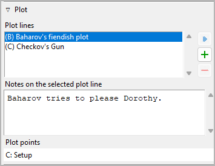
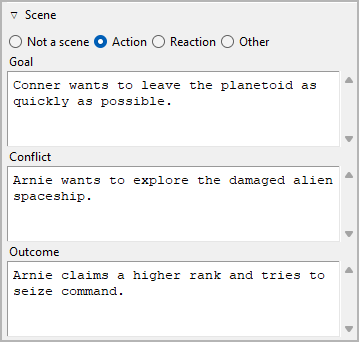
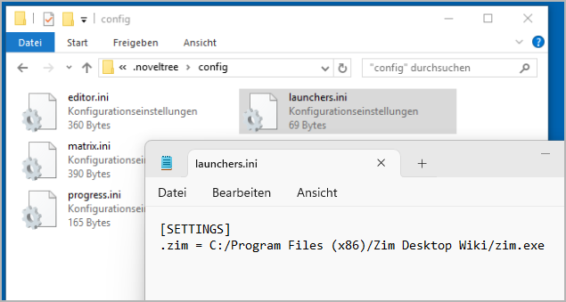

Section properties
The Section properties view opens in the right pane when you select a section in the tree.

Title and description
Title and description are displayed in an editable “index card”.
The editing of the title can be completed by pressing the Enter key.
Changes to the description are applied when the mouse is clicked
anywhere outside the text input field.
Viewpoint
The viewpoint character’s short name is displayed in the tree view. You can select it from a drop-down list containing all characters in the tree view’s sort order.
Unused
With the Unused checkbox, you can change the section type.
Append to previous section
When ticked, there will be no section divider inserted above the selected section in exported documents. The section just starts a new paragraph.
Plot
Expand or collapse this frame by clicking on the label.
Plot lines
Here you can assign the selected section to the plot lines it belongs to. The assigned plot lines are displayed in a list in the order they are assigned to the section.
Tip
A more convenient way to manage and keep track of plot line assignments is offered by the nv_matrix plugin.
You can also assign a section to a plot line by entering text in the corresponding Plot line notes cell of the plot grid.
- Add plot line assignment
When clicking on
 , the “Pick mode”
is activated, and the cursor changes to a “plus” shape. By clicking
on a plot line, it will be related with the section.
, the “Pick mode”
is activated, and the cursor changes to a “plus” shape. By clicking
on a plot line, it will be related with the section.Hint
You can exit the “Pick mode” without selecting an element by clicking on the highlighted status bar, or by pressing the
Esckey.- Remove plot line assignment
When clicking on
 or pressing the
or pressing the Delkey, the selected plot line is removed from the list.- View the related element
When double-clicking on a plot line, or clicking on
 ,
the selected plot line is opened and its properties are displayed.
,
the selected plot line is opened and its properties are displayed.Hint
You can go back to the initially selected section with
 .
.- Plot line notes
You can enter section-related notes for the plot line selected in the list of related plot lines. These notes appear in the plot grid where you also can edit them.
Plot points
The plot points assigned with the selected section are displayed along with their plot lines.
Hint
To change or clear the plot point assignment, go to the plot point’s properties.
Scene
Expand or collapse this frame by clicking on the label.
Here is an example of an “action scene”:
Here is an example of a “reaction scene” or “sequel”:

There is a popular theory for “selling writers” that suggests novels are best divided into scenes, alternating between “action scenes” and “reaction scenes”, or “scenes” and “sequels”. If you want to implement something like this to ensure suspense, you can do so here.
If this is not for you, but you would like to use a different method to set up a dramaturgical scene micro-structure, you can set the section to Other, and get three freely named text fields.
Here is an example of a non-standard scene category:
On the other hand, not every section is a scene to which the categories mentioned above apply. Sections can be characterized by mode of discourse (e.g. Narration, Dramatic action, Dialogue, Description, Exposition). So if a section is not staged, you can set the section to Not a scene, and get three freely named text fields.
Here is an example of a non-staged section category:
Relationships
Expand or collapse this frame by clicking on the label.

If you want to associate characters, locations, and items with the section, you can do it here by adding the element to a list of relationships.
- Show ages
If a section is dated, you can call up the ages of the related characters who have birth dates.
- Add Relationship
When clicking on
, the “Pick mode”
is activated, and the cursor changes to a “plus” shape. By clicking
on a character/location/item, this element will be related with the
section.Hint
You can exit the “Pick mode” without selecting an element by clicking on the highlighted status bar, or by pressing the
Esckey.- Remove Relationship
When clicking on
or pressing the Delkey, the selected relationship is removed from the list.- View the related element
When double-clicking on a related element, or clicking on
,
the selected element is opened and its properties are displayed.Hint
You can go back to the initially selected section with
.
Hint
A convenient way to manage and keep track of relationships is offered by the nv_matrix plugin.
Date/Time
Here you can enter information about the selected section’s narrative time.
Editing can be completed by pressing the Enter key.
Hint
Dedicated timeline software offers a more convenient way of entering date/time and duration information. So if chronology is important to your story, you might want to take a look at the Timeline plugin, or the Aeon Timeline 2 plugin.
Start
If the selected section is a scene, this is when it starts:
- Date
Format: YYYY-MM-DD, according to ISO 8601.
- Time
Format: hh:mm, according to ISO 8601.
- Day
Format: Any number. Day “0” is the reference date, if set.
Note
All entries are optional. You can either enter a date, or a day.
- Moon phase
If the required date information is set, you can call up the corresponding moon phase.

The moon phase information consists of:
the phase day (0 to 29, where 0=new moon, 15=full etc.),
the visible shape,
the fraction illuminated.
Note
The moon phase calculation is based on a ‘do it in your head’ algorithm by John Conway. In its current form, it’s only valid for the 20th and 21st centuries.
- Clear date/time
This will reset Date, Time, and Day simultaneously.
- Generate
This generates date and time from the date/time/duration data of the previous section, so the selected section follows directly the previous one.
- Convert date/day
If the reference date is set, The unspecific Day can be transformed into a specific Date, and vice versa.
Hint
If necessary, you can convert all sections at once in the Book properties view.
Duration
- Days
Any number should be accepted.
- Hours
If a number greater than 24 is entered, the number of days will be automatically increased.
- Minutes
If a number greater than 60 is entered, the number of hours will be automatically increased.
- Clear duration
This will reset Days, Hours, and Minutes simultaneously.
- Generate
This generates the duration from the date/time data of the next section, so the next section follows directly the current one.
Links
Expand or collapse this frame by clicking on the label.

This is a list for image and research document links.
Although novelibre holds some character/location/item data, it is not the right application for extensive world building. For this, you may want to use more powerful software, like Zim Desktop Wiki. In this case, novelibre allows you to create links to the text files that will take you quickly to the right places in the wiki.
Or you have collected some images that could inspire you when writing. Then simply create links to these images to open them with your system’s standard image viewer.
Tip
If you have collected several images for a character in a folder that your standard image viewer can browse through, a single link to any image file is sufficient.
The links are displayed in a list in the order they are entered.
- Add Link
When clicking on
, a file selection dialog opens. The selected
file will be added to the link list.Hint
By default, the dialog shows image files. For other file types, change the selector in the lower right corner.

- Remove Link
When clicking on
or pressing the Delkey, the selected link is removed from the list.- Open Link
When double-clicking on a link, or clicking on
,
the link is opened with the standard application for the link’s file type.Hint
If you want to open certain linked files with another application than the standard application, you can provide a novelibre “launcher” setting. For this, just create a text file named launchers.ini in the
.novx/configdirectory (where all configuration files are stored). Here you can assign applications to the file extensions.Zim desktop wiki pages are a special case. For this, the Zim program is assigned to the .zim extension.
This example shows a setting that makes novelibre open text files with the Zim Desktop Wiki application instead of the standard text editor:
[SETTINGS] .zim = C:/Program Files (x86)/Zim Desktop Wiki/zim.exe
“Sticky note”
The yellow text area is for notes. Changes are applied when the mouse is clicked anywhere outside the text input field.
When the “sticky note” of a section contains text, “N” is displayed in the tree view as a reminder. If the branch of a chapter with sections containing notes is collapsed, the “N” is displayed in the chapter row.